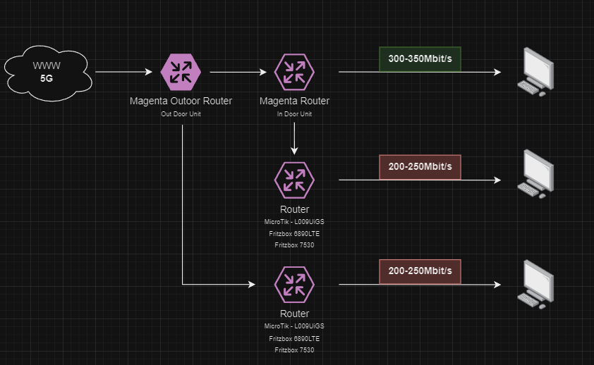

Hallo,
Ich habe meine Outdoorbox an die Fritzbox angeschlossen (WAN) Die Outdoorunit habe ich nach einigen Tests auf "Router"
Soweit so gut. Es funktioniert soweit alles, aber lustigerweise habe ich, wenn ich irgendeine Fritzbox statt der IDU anschließe (habe 2 verschiedene unterschiedliche Typen probiert) nur mehr 200-250MBit. Sobald ich die IDU verwende und dort denselben PC anschließe 350-400MBit. (Gleiche Netzwerkkabel, gleicher PC, gleicher Switch, nur die IDU mit der Fritzbox ausgetauscht) Ich habe auch schon die IDU belassen und an der IDU die Fritzbox(en) angeschlossen. Selbes Phänomen. Da es bei beiden Fritzboxen Auftritt müsste es fast daran liegen. Hab leider nur die 2 Fritzboxen und die IDU zum testen. Sollte also ein Fritzbox Problem sein. Aber ich dachte mal uch frag trotzdem da ja hier ein paar schon eine Fritzbox statt der IDU benutzen.
Jemand eine Idee? (An AVM ich mich schon gewannt. Mal schauen was die dazu sagen)
Danke & LG
Welche Bandbreite ist in der FRITZ!Box eingestellt?
Wird über LAN oder WLAN getestet, WLAN kann schonmal für Probleme sorgen
Hey das Problem ist schon öfter zum lesen bzw im Bridge Modus fällt die Bandbreite voll runter warum auch immer !
Denke da sie beide doch zusammen arbeiten odu idu wird das irgendwie so sein
Einzigen was das echt können und schon von Haus aus im Bridge sind ohne Verlust Askey 6300 , ZTE , zyxel
P.s. bzw ich persönlich halte gar nix von den Fritzboxen machen mehr Probleme als andere Router ist meine persönliche Meinung! Mfg
Bearbeitet von Klaximaxi43Am 24.5.2024 um 21:30 schrieb IT-Freak:Welche Bandbreite ist in der FRITZ!Box eingestellt?
Wird über LAN oder WLAN getestet, WLAN kann schonmal für Probleme sorgen
Natürlich alles immer über LAN. An der einen Fritzbox hatte ich das selber auf 600Mbit /40Mbit gestellt und die andere war von haus aus auf 1000MBit/1000MBit. Bei beiden das selbe Ergebnis.
Am 24.5.2024 um 22:38 schrieb Klaximaxi43:Hey das Problem ist schon öfter zum lesen bzw im Bridge Modus fällt die Bandbreite voll runter warum auch immer !
...
Derzeit habe ich den Bridge Modus nicht aktiviert. Der macht bei mir Probleme. Immer kurze Verbindungsabbrüche. Geschwindigkeit ist aber im Bridge Modus gleich wie im Routermodus wenn die Fritzbox drann ist.
Ich hab ja derzeit auch noch ein Zyxel NR7302 von einem anderen Anbieter da. Dort habe ich versuchsweise die magenta sim eingelegt und habe das gleiche Problem. Direkt am Zyxel 300-400MBit. Dann wieder mit der Fritzbox dran 200-280MBit. Einziger unterschied ist das ich beim Zyxel im Schnitt einen 10ms besseren ping habe. Leider muss ich den Zyxel ja dem Anderen Anbieter zurückgeben, das ding ist schon nice und unterstützt auch N75 und N78
Bzgl. Fritzbox. De waren halt bei den Anbietern dabei bzw. meinem vorherigem Vertrag dabei. Ich bin eh schon am überlegen ob ich mir nicht einen simplen router (ohne WLAN, habe seperate acces pointss je Stockwerk) besorge. Nur weiß ich halt nicht ob die auch das Problem haben.
Kannst du router empfehlen? Ich mein... Ich bin ja fast soweit das ich wirklich die beigelegte IDU nehme, aber die fühlt sich halt etwas öde an
😉
Hey dann liegt es eventuell doch an der Fritzbox aber ich kann auch bestätigen damit wenn man die Magenta Box in den Bridge Modus versetzt damit alles weniger Speed hat per LAN zumindest über WLAN passt es aber das kann auch lte Forum etc bestätigen! Komisch halt !
Mit Askey und Cudy ax3000 gab es da keine Probleme Verluste
Zyxel ist top ja aber das Band N75 ist bis 2025 kein Thema momentan bis das bei uns kommt in 1210 Wien stammersdorf wird noch lange dauern
Man weiß ob es sichs durchsetz so gut soll es nicht sein von den ersten Tests her 😉 N78 ist da noch immer besser
Aber denke dann liegt es trotzdem an der Fritzbox
P.s. wenn ja ein x65 aber diese x62 sind alle nix eigentlich alle abgespeckt also ein x55 ist da noch immer besser als ein x62 der Nachfolger wäre eben ein x65
Bei zyxel weiß ich es leider nicht wohl schon mal gesucht aber denke e ein x65 mfg
Bearbeitet von Klaximaxi43Aber Frage noch warum willst du eigentlich die Fritz nehmen ich persönlich finde es eine gute Kombination odu+ idu also war bin fasziniert eigentlich von der kleinen WLAN box alleine vom Empfang her ! Auch mein Sohn war sofort begeistert davon 😌 ! Finde sie top wohl namenlos ! Ja viele möchten wegen vpn bzw wegen wireguard aber das kommt bei mir e nicht in Frage wenn nur ikev2 bzw Openvpn und das nur mit strongswan bzw Open vpn App auf meine Android TV Google TV Boxen bzw Tab Handy ! Mit den ikev2 Account habe ich keine Geräte Limits zum Glück und 19 Euro für das ganze Jahr + top Support noch dazu auf deutsch - Österreicher ! Mfg 😁
P.s, dato selbe Problem mit lan
https://www.lteforum.at/mobilfunk/magenta-5g-box-bridge-mode.18588/
Bearbeitet von Klaximaxi43P.s. teste mal das oder mit vlan im Bridge Modus aber das soll besser sein
Die ODU kann nicht in den Bridge-Modus geschaltet werden. Daher gibt es zwei NATs. Ich habe es so gemacht. ODU funktioniert im Router-Modus und ich habe den Heimrouter in den AP-Modus geschaltet und uTorrent gestartet, aber da ist nichts Verrücktes.
Am 25.5.2024 um 21:24 schrieb Klaximaxi43:Die ODU kann nicht in den Bridge-Modus geschaltet werden.
Also bei mir ging das schon. Steht auch in dem Link den du gepostet hast. Aber hat bei mir nicht ganz gut geklappt.
Die Fritzboxen benutze ich ja nur weil sie da sind und ich nicht wieder alle DHCP IP's (MAC link) vergeben will. Mir ist aber eingefallen das ich ja noch einen Cisco Switch (SG350) in meinem Netz hängen hab. Ich glaub der hat auch nen WAN port bzw. kann das. Ich teste mal den.
Danke für deine Antworten!
Jepp es gibt es Möglichkeiten für den Bridge das ja
Vlan, console, oder neuer Benutzer
Bzw probiere es mit Mac in die odu bei dmz von der Fritz etc
Wegen Doppel nat Problem halt 😉 mfg
Würde dir eher momentan Cudy oder gl.inet bzw Mikrotik empfehlen auch bei vpn
Hatte selber jetzt mit Askey den wr3000 der geht echt up das Ding
WR+TR3000 die besten wobei tr einen 2.5G wan ansonsten e identisch und Preis mehr momentan beim tr wobei beide gleich waren vom Preis her 47 Euro und 55 Euro wr+ tr!
Seite ist auch aktualisiert mit alle Daten und vpn Speed
Und Support bis 2027 mal
OpenVPN Client (UL/DL): 90 / 120 Mbps
OpenVPN Server (UL/DL): 180 / 160 Mbps
WireGuard Client (UL/DL): 224 / 230 Mbps
WireGuard Server (UL/DL): 160 / 90 Mbps
Besser als gl.inet eigentlich diese cudys und alles einstellbar mehr als was man braucht dann ! Mfg
Am 26.5.2024 um 14:11 schrieb ChriD:Also bei mir ging das schon. Steht auch in dem Link den du gepostet hast. Aber hat bei mir nicht ganz gut geklappt.
Die Fritzboxen benutze ich ja nur weil sie da sind und ich nicht wieder alle DHCP IP's (MAC link) vergeben will. Mir ist aber eingefallen das ich ja noch einen Cisco Switch (SG350) in meinem Netz hängen hab. Ich glaub der hat auch nen WAN port bzw. kann das. Ich teste mal den.
Danke für deine Antworten!
Hey hast es mal so ganz normal probiert ohne Console ohne was löschen ändern etc also ohne umgehen mit Schmäh oder Skript
Einfach Verbindung trennen
danach ins MPDN Management und ein zweites Profil anlegen (PDN2) und schon ist der Bridge Modus da
😄
Aber nicht vergessen wie im Nat Thread beschrieben ist
APN-Name "business.gprsinternet" stelle die Authentifizierung auf "PAP", gebe als Benutzername "t-mobile" ein und als Passwort "tm"
Falls noch was dann halt noch die Mac von der Fritz in DMZ mac eintragen in der ODU und Firewall niedrig + upnp an !
Viel Erfolg mfg
Bearbeitet von Klaximaxi43
@Klaximaxi43
Danke für all die tollen Infos!
Das mit dem Bridge Modus muss ich nochmal probieren. Hab jetzt bisweilen noch ein paar weitere Tests gemacht da ich mir einen MicroTik L009UiGS besorgt habe
Folgend der Testaufbau:

Wie man sieht ist es egal ob Fritze oder MicroTik. Ich hab jeweils 5 RTR Netzttestst gemacht danach den computer umgesteckt (ip release + renew) und dann wieder 5 Tests. Danach zum verifizieren wieder zurück auf den Magenta Router. Das oben kam raus. Ich verstehe einfach nicht wie das sein kann.
Langsam verstehe ich es auch nicht mehr ganz wie kann es so abgestimmt sein ODU mit IDU echt fasziniert
Aber ich persönlich nutze nur daweil die original idu
Aber mir ist es auch ein Rätsel weil würde es echt funktionieren würde ich mir auch sofort den Cudy TR3000 noch dazu holen
Den askey mit Cudy wr3000 habe ich ja bereits verkauft schade sonst hätte ich mich auch noch spielen können
Die Frage ist was passiert wenn man dann eine defekte idu hat und eine neue bekommt ob es da auch dann nicht mehr zusammen arbeitet also echt nur die original was zusammen gehören !
Aber im Skript habe ich glaube ich noch was mit Bridge gesehen einen eigenen Menü Punkt
P.s. aber das es an Geschwindigkeit verliert sagten viele aber warum 😉
Angeblich funktioniert es nur wenn man einen WLAN Router in den AP Modus versetzt dann sollte es passen
Mfg
Bearbeitet von Klaximaxi43AP
AP Wifi6 die mit Wifi6E zu Teuer alle dann
https://geizhals.at/?cat=wlanap&v=e&hloc=at&hloc=de&sort=p&bl1_id=30&xf=529_802.11ax
Bzw mache Mikrotik mal zu AP das geht eigentlich mit Mikrotik alles !
Cudys können es auch etc ,...
MFG
Bearbeitet von Klaximaxi43Weißt was mir eingefallen noch ist !
Trage alles überall so um ein in die Fritz wie es bei der IDU ist auch die Mac sollte man e ändern können bzw mit Mikrotik gehts
1 zu 1 übertragen die Daten 😃
Mich hat es erwischt bin leider krank kaputt seit Donnerstag aber wenn es mir besser geht werde ich auch weiter schauen mit Skript etc
Bis dahin schönes Wochenende
OK also das haben ja alle eigentlich im Bridge Modus weniger Speed 😜
Und macht das Mesh weg auf alle Fälle solange kein triband Mesh seperates Mesh weil ein geteiltes Mesh Haut alles zusammen vom Speed nur nebenbei noch gesagt!
Aber würde sie echt original lassen und zur Not echt AP dazu mit Mikrotik etc auf AP Modus und gut ist es 👍
Stark ist sie eigentlich noch immer Luxus klasse wie mc801a der Chip x55 der Nachfolger wäre dann eben ein x65 aber diese x62 sind alle nicht gut und billig !
X55,X65, und eher dann weiter mit x70 ist Luxus klasse also würde ich es so lassen und fertig 😜 mfg
Was passiert wenn du die normale apn Einträgst ! Normale T-Mobile ohne Public nat also das ipv6 läuft ! Mfg
Leider fällt mir auch nix mehr ein sorry
Was passiert eigentlich wenn du es auf Router Modus lässt statt Bridge ?
ZTE 7010 kann auch beides
Askey hat nur den Bridge Modus
Bekomme zum Gegentest einen ZTE 7010 da um 100 ergattert voll OK 😀 mfg
Also viel gelesen Router Modus bleibt besser schneller als Bridge Modus
Können viele bestätigen es ist real auch damit im Bridge alles langsam wird ! ZTE 7010 geht auch beides !
Das auch gut
Bzw manche nennen es WISP oder mmh
https://www.cudy.com/blogs/faq/how-to-configure-cudy-wi-fi-router-into-wisp-mode
Der hat einen Router Modus
Also kein Wisp es muss so Stehen
https://www.tp-link.com/de/home-networking/wifi-router/tl-wr902ac/
Der wäre top mit 4x4 Mimo WLAN aber keine Ahnung ob Router Mode
https://www.mi.com/de/product/xiaomi-router-ax3200/
Mfg
Bearbeitet von Klaximaxi43
Hast du es probiert mit pdn2 brücke
Und welche Firmware hast du drauf auf der odu und idu bitte mfg
Schau mal hier mein letzter Absatz 😀 Brückenmodus Mac Clone wan Einstellungen
Alle Daten Chipsatz und mehr von der WNC Outdoor Box + Console Infos CA und mehr
Und welche Firmware hast du auf odu und idu
Bearbeitet von Klaximaxi43
Danke für die ganzen Infos. Ich muss die Geräte erstmal wieder alle aktivieren. Ich benutze den Zyxel LTE und den MicroTik. Die Geräte von Magenta hab ich derzeit nicht in Benutzung.
Am 14.6.2024 um 08:35 schrieb ChriD:Danke für die ganzen Infos. Ich muss die Geräte erstmal wieder alle aktivieren. Ich benutze den Zyxel LTE und den MicroTik. Die Geräte von Magenta hab ich derzeit nicht in Benutzung.
OK danke ja wäre interessant wer was hat hoffe die was kommt ist echt eine 01.09.30 dann sonst umsonst Getauscht aber kein Verlust also passt es ja 😉
Wie gesagt manche haben 01.06 manche 01.08 und manche 01.09 ist halt faszinierend weil eigentlich sollten ja alle die gleiche haben nicht 3 x andere 😂 mfg
Hallo,
Ich habe meine Outdoorbox an die Fritzbox angeschlossen (WAN) Die Outdoorunit habe ich nach einigen Tests auf "Router"
Soweit so gut. Es funktioniert soweit alles, aber lustigerweise habe ich, wenn ich irgendeine Fritzbox statt der IDU anschließe (habe 2 verschiedene unterschiedliche Typen probiert) nur mehr 200-250MBit. Sobald ich die IDU verwende und dort denselben PC anschließe 350-400MBit. (Gleiche Netzwerkkabel, gleicher PC, gleicher Switch, nur die IDU mit der Fritzbox ausgetauscht) Ich habe auch schon die IDU belassen und an der IDU die Fritzbox(en) angeschlossen. Selbes Phänomen. Da es bei beiden Fritzboxen Auftritt müsste es fast daran liegen. Hab leider nur die 2 Fritzboxen und die IDU zum testen. Sollte also ein Fritzbox Problem sein. Aber ich dachte mal uch frag trotzdem da ja hier ein paar schon eine Fritzbox statt der IDU benutzen.
Jemand eine Idee? (An AVM ich mich schon gewannt. Mal schauen was die dazu sagen)
Danke & LG
Ich kaufe mir auch wieder einen 4x4 mu Mimo dazu wenn es soweit ist berichte ich
Bisschen noch abwarten OK den Xiaomi zurück gesendet irgendwie stimmte da was nicht
Gehe wieder zu Cudy das waren die besten bis jetzt eigentlich den ax3000 hätte ich nicht hergeben sollen
Also die wnc bleibt aber will auch einen anderen WLAN Router irgendwie
Wobei die idu trotzdem top ist eigentlich aber trotzdem vermisse openwrt auch irgendwie hehe
Schade das der tr3000 nicht wieder um 55 Euro bei alza ist Preis 80 zu viel
Notfalls wieder zurück zu AX3000 schwarzen wobei andere Farbe weiss oder blau besser wäre wegen Staub 😄 den wr3000h bzw s gibt es noch nicht bei uns weiß 😉
https://www.cudy.com/products/tr3000-1-0
https://www.cudy.com/products/wr3000h-1-0
https://www.cudy.com/products/wr3000s-1-0
https://www.cudy.com/products/wr3000-1-0
Kaufe nur einen von diese wenn wieder ! Den letzten hatte ich ja daheim mit Askey 6300
Mfg schönes Wochenende
Bearbeitet von Klaximaxi43Am 14.6.2024 um 08:35 schrieb ChriD:Danke für die ganzen Infos. Ich muss die Geräte erstmal wieder alle aktivieren. Ich benutze den Zyxel LTE und den MicroTik. Die Geräte von Magenta hab ich derzeit nicht in Benutzung.
Hier von @Rafael lese mal
Zum Glück habe ich ein anderes gekauft über willhaben und noch 3 andere liegen in der lade ja 😺 bei mir war ja kein Original dabei gebraucht damals 😀
7370-magenta-5g-box-outdoor-xbox-nat-typ-strikt/page/2/?page=2&do=embed
Also so geht es fix dann auch 😃 mfg
So wieder bestellt wr3000 ist am Dienstag da ! Leider 1 Std zu spät bestellt bei Amazon ansonsten Montag da hehe 😉
Doch noch schnell um entschieden
Meine wollte ich zwar um 45 hergeben aber den Geld zurück bevor was dann ist und ich die idu doch brauche !
Den Cudy storniert da noch immer kein Weisser und schwarz doch nicht meins so ehrlich gesagt 😁
Und den auf die schnelle genommen
Weiß Xiaomi ax3000t reicht auch notfalls gibt es noch diesen binadit weiss um 55 Euro
Xiaomi morgen schon da ist Versand am weg mit Amazon Fahrer 😃
https://www.mi.com/global/product/xiaomi-router-ax3000t/
Mfg
Bearbeitet von Klaximaxi43https://www.binardat.com/index.php?route=product/product&path=224&product_id=469
Dieser ist auch weiß oder ZTE aber denke da ist am besten Xiaomi der weiße 😁
Ist angekommen läuft top mal teste morgen mehr 🐱 mfg
Geht eigentlich alles zum Einstellen habe Router Modus belassen da geht noch einiges mehr als diese Bilder und wichtig für mich Led aus 😍
https://www.mediafire.com/file/0145t0gxg233p1a/neww.zip/file
Und voller Empfang auch bei WLAN beide Netze voll alles ! War eine gute Entscheidung nach 100x überlegen 2x stornieren
Der super eigentlich um den Preis Xiaomi
Lustig Netzteil summt fiepst auch nicht mehr wenn er angeschlossen ist cool 😃 trotzdem Adapter bestellt 😀 alles leise auch mit Ohr drauf 😜
Am Anfang kann man auch das easy Menü nehmen da macht er alles selber auch von isp wan und mehr
Aber muß dazu sagen ich habe nicht das Original poe was dabei war weil ja keines dabei war bei mir
Ich habe das extra dazu gekauft das selbe was dabei ist dieses Phihong's Poe aber ein neutrales von Internet! Alles OK und kein Speed Verlust bis jetzt wobei habe nur 80/20 momentan aber es ist fast immer bei ca 91/24 wie bei der original idu also ansonsten 79/22mbs wenn alle drinnen sind ! (Sbudget T-Mobile apn) Internet und Telefon Karte wegen die 30 Tage aufladen statt 28 Tage wie bei T-Mobile Magenta! Darum sbudget und Preis war top 80/20 um 19.90 Internet und Telefon 9.90 mit 50gb aber nur 1000 Minuten aber Telefoniere sehr ungern also reicht es ! Ich rufe selten wem an nur umgekehrt hehe 😃 mfg
Bearbeitet von Klaximaxi43Hier ca 7-10 Meter entfernt und 1 Mauer bzw türe dazwischen das mit 80/20 ab und zu geht er jetzt sogar auf 113mbs rauf mit ax3000t
War auf 135 leider Foto zu spät Screenshot da Tasten Sperre war aber egal es funktioniert besser mehr als die idu auf alle Fälle es geht sicher mehr mit 4x4 Mimo etc aber das reicht mal
P.s. habe nix geändert an der odu nur ax3000t eingerichtet meine ssids und Passwort ipv6 an Router Modus aus dann nur idu weg und Xiaomi angeschlossen also nix geändert auf der odu weder Bridge Modus noch Firewall etc alles original mfg
Hier nochmals die Einstellungen aber auch egal ob sbudget T-Mobile bussines Einstellungen etc alles funktioniert im Router Modus tadellos 😃 fast jetzt immer knapp 100mbs ! Brauche den Bridge Modus also nicht 😁 mfg
Bearbeitet von Klaximaxi43
Am 30.5.2024 um 15:15 schrieb ChriD:@Klaximaxi43
Danke für all die tollen Infos!
Das mit dem Bridge Modus muss ich nochmal probieren. Hab jetzt bisweilen noch ein paar weitere Tests gemacht da ich mir einen MicroTik L009UiGS besorgt habe
Folgend der Testaufbau:
Wie man sieht ist es egal ob Fritze oder MicroTik. Ich hab jeweils 5 RTR Netzttestst gemacht danach den computer umgesteckt (ip release + renew) und dann wieder 5 Tests. Danach zum verifizieren wieder zurück auf den Magenta Router. Das oben kam raus. Ich verstehe einfach nicht wie das sein kann.
Chris Update ist da Bridge Modus ab sofort
Mfg
Am 30.5.2024 um 15:15 schrieb ChriD:@Klaximaxi43
Danke für all die tollen Infos!
Das mit dem Bridge Modus muss ich nochmal probieren. Hab jetzt bisweilen noch ein paar weitere Tests gemacht da ich mir einen MicroTik L009UiGS besorgt habe
Folgend der Testaufbau:
Wie man sieht ist es egal ob Fritze oder MicroTik. Ich hab jeweils 5 RTR Netzttestst gemacht danach den computer umgesteckt (ip release + renew) und dann wieder 5 Tests. Danach zum verifizieren wieder zurück auf den Magenta Router. Das oben kam raus. Ich verstehe einfach nicht wie das sein kann.
So wie es aussieht ist der der Hund wuff wuff
Outdoor Box 5G Bridge Mode verlangsamt Download
Letzten 2 Posts siehe von mir 😄
Deswegen der Verlust bei 2x Bridge
Mfg
Bearbeitet von Klaximaxi43{kind=link}
{kind=link}
{kind=link}
{kind=link}
{kind=link}
{kind=link}
{kind=link}
{kind=link}
{kind=link}
{kind=link}
{kind=link}
{kind=link}
{kind=link}
{kind=link}
{kind=link}
{kind=link}
{kind=link}
{kind=link}
{kind=link}
{kind=link}